最高人民法院 最高人民检察院 公安部 国家安全部 司法部
关于发布《人体损伤程度鉴定标准》的公告
为进一步加强人身损伤程度鉴定标准化、规范化工作，现将《人体损伤程度鉴定标准》发布，自2014年1月1日起施行。《人体重伤鉴定标准》（司发〔1990〕070号）、《人体轻伤鉴定标准（试行）》（法（司）发〔1990〕6号）和《人体轻微伤的鉴定》（GA/T146-1996）同时废止。
最高人民法院 最高人民检察院 公安部 国家安全部 司法部
2013年8月30日
人体损伤程度鉴定标准
1 范围
本标准规定了人体损伤程度鉴定的原则、方法、内容和等级划分。
本标准适用于《中华人民共和国刑法》及其他法律、法规所涉及的人体损伤程度鉴定。
2 规范性引用文件
下列文件对于本文件的应用是必不可少的。本标准引用文件的最新版本适用于本标准。
GB 18667 道路交通事故受伤人员伤残评定
GB/T 16180 劳动能力鉴定职工工伤与职业病致残等级
GB/T 26341-2010 残疾人残疾分类和分级
3 术语和定义
3.1 重伤
使人肢体残废、毁人容貌、丧失听觉、丧失视觉、丧失其他器官功能或者其他对于人身健康有重大伤害的损伤，包括重伤一级和重伤二级。
3.2 轻伤
使人肢体或者容貌损害，听觉、视觉或者其他器官功能部分障碍或者其他对于人身健康有中度伤害的损伤，包括轻伤一级和轻伤二级。
3.3 轻微伤
各种致伤因素所致的原发性损伤，造成组织器官结构轻微损害或者轻微功能障碍。
4 总则
4.1 鉴定原则
4.1.1 遵循实事求是的原则，坚持以致伤因素对人体直接造成的原发性损伤及由损伤引起的并发症或者后遗症为依据，全面分析，综合鉴定。
4.1.2 对于以原发性损伤及其并发症作为鉴定依据的，鉴定时应以损伤当时伤情为主，损伤的后果为辅，综合鉴定。
4.1.3 对于以容貌损害或者组织器官功能障碍作为鉴定依据的，鉴定时应以损伤的后果为主，损伤当时伤情为辅，综合鉴定。
4.2 鉴定时机
4.2.1 以原发性损伤为主要鉴定依据的，伤后即可进行鉴定；以损伤所致的并发症为主要鉴定依据的，在伤情稳定后进行鉴定。
4.2.2 以容貌损害或者组织器官功能障碍为主要鉴定依据的，在损伤90日后进行鉴定；在特殊情况下可以根据原发性损伤及其并发症出具鉴定意见，但须对有可能出现的后遗症加以说明，必要时应进行复检并予以补充鉴定。
4.2.3 疑难、复杂的损伤，在临床治疗终结或者伤情稳定后进行鉴定。
4.3 伤病关系处理原则
4.3.1 损伤为主要作用的，既往伤/病为次要或者轻微作用的，应依据本标准相应条款进行鉴定。
4.3.2 损伤与既往伤/病共同作用的，即二者作用相当的，应依据本标准相应条款适度降低损伤程度等级，即等级为重伤一级和重伤二级的，可视具体情况鉴定为轻伤一级或者轻伤二级，等级为轻伤一级和轻伤二级的，均鉴定为轻微伤。
4.3.3 既往伤/病为主要作用的，即损伤为次要或者轻微作用的，不宜进行损伤程度鉴定，只说明因果关系。
5 损伤程度分级
5.1 颅脑、脊髓损伤
5.1.1 重伤一级
a）植物生存状态。
b）四肢瘫（三肢以上肌力3级以下）。
c）偏瘫、截瘫（肌力2级以下），伴大便、小便失禁。
d）非肢体瘫的运动障碍（重度）。
e）重度智能减退或者器质性精神障碍，生活完全不能自理。
5.1.2 重伤二级
a）头皮缺损面积累计75.0cm2以上。
b）开放性颅骨骨折伴硬脑膜破裂。
c）颅骨凹陷性或者粉碎性骨折，出现脑受压症状和体征，须手术治疗。
d）颅底骨折，伴脑脊液漏持续4周以上。
e）颅底骨折，伴面神经或者听神经损伤引起相应神经功能障碍。
f）外伤性蛛网膜下腔出血，伴神经系统症状和体征。
g）脑挫（裂）伤，伴神经系统症状和体征。
h）颅内出血，伴脑受压症状和体征。
i）外伤性脑梗死，伴神经系统症状和体征。
j）外伤性脑脓肿。
k）外伤性脑动脉瘤，须手术治疗。
l）外伤性迟发性癫痫。
m）外伤性脑积水，须手术治疗。
n）外伤性颈动脉海绵窦瘘。
o）外伤性下丘脑综合征。
p）外伤性尿崩症。
q）单肢瘫（肌力3级以下）。
r）脊髓损伤致重度肛门失禁或者重度排尿障碍。
5.1.3 轻伤一级
a）头皮创口或者瘢痕长度累计20.0cm以上。
b）头皮撕脱伤面积累计50.0cm2以上；头皮缺损面积累计24.0cm2以上。
c）颅骨凹陷性或者粉碎性骨折。
d）颅底骨折伴脑脊液漏。
e）脑挫（裂）伤；颅内出血；慢性颅内血肿；外伤性硬脑膜下积液。
f）外伤性脑积水；外伤性颅内动脉瘤；外伤性脑梗死；外伤性颅内低压综合征。
g）脊髓损伤致排便或者排尿功能障碍（轻度）。
h）脊髓挫裂伤。
5.1.4 轻伤二级
a）头皮创口或者瘢痕长度累计8.0cm以上。
b）头皮撕脱伤面积累计20.0cm2以上；头皮缺损面积累计10.0cm2以上。
c）帽状腱膜下血肿范围50.0cm2以上。
d）颅骨骨折。
e）外伤性蛛网膜下腔出血。
f）脑神经损伤引起相应神经功能障碍。
5.1.5 轻微伤
a）头部外伤后伴有神经症状。
b）头皮擦伤面积5.0cm2以上；头皮挫伤；头皮下血肿。
c）头皮创口或者瘢痕。
5.2 面部、耳廓损伤
5.2.1 重伤一级
a）容貌毁损（重度）。
5.2.2 重伤二级
a）面部条状瘢痕（50%以上位于中心区），单条长度10.0cm以上，或者两条以上长度累计15.0cm以上。
b）面部块状瘢痕（50%以上位于中心区），单块面积6.0cm2以上，或者两块以上面积累计10.0cm2以上。
c）面部片状细小瘢痕或者显著色素异常，面积累计达面部30%。
d）一侧眼球萎缩或者缺失。
e）眼睑缺失相当于一侧上眼睑1/2以上。
f）一侧眼睑重度外翻或者双侧眼睑中度外翻。
g）一侧上睑下垂完全覆盖瞳孔。
h）一侧眼眶骨折致眼球内陷0.5cm以上。
i）一侧鼻泪管和内眦韧带断裂。
j）鼻部离断或者缺损30%以上。
k）耳廓离断、缺损或者挛缩畸形累计相当于一侧耳廓面积50%以上。
l）口唇离断或者缺损致牙齿外露3枚以上。
m）舌体离断或者缺损达舌系带。
n）牙齿脱落或者牙折共7枚以上。
o）损伤致张口困难Ⅲ度。
p）面神经损伤致一侧面肌大部分瘫痪，遗留眼睑闭合不全和口角歪斜。
q）容貌毁损（轻度）。
5.2.3 轻伤一级
a）面部单个创口或者瘢痕长度6.0cm以上；多个创口或者瘢痕长度累计10.0cm以上。
b）面部块状瘢痕，单块面积4.0cm2以上；多块面积累计7.0cm2以上。
c）面部片状细小瘢痕或者明显色素异常，面积累计30.0cm2以上。
d）眼睑缺失相当于一侧上眼睑1/4以上。
e）一侧眼睑中度外翻；双侧眼睑轻度外翻。
f）一侧上眼睑下垂覆盖瞳孔超过1/2。
g）两处以上不同眶壁骨折；一侧眶壁骨折致眼球内陷0.2cm以上。
h）双侧泪器损伤伴溢泪。
i）一侧鼻泪管断裂；一侧内眦韧带断裂。
j）耳廓离断、缺损或者挛缩畸形累计相当于一侧耳廓面积30%以上。
k）鼻部离断或者缺损15%以上。
l）口唇离断或者缺损致牙齿外露1枚以上。
m）牙齿脱落或者牙折共4枚以上。
n）损伤致张口困难Ⅱ度。
o）腮腺总导管完全断裂。
p）面神经损伤致一侧面肌部分瘫痪，遗留眼睑闭合不全或者口角歪斜。
5.2.4 轻伤二级
a）面部单个创口或者瘢痕长度4.5cm以上；多个创口或者瘢痕长度累计6.0cm以上。
b）面颊穿透创，皮肤创口或者瘢痕长度1.0cm以上。
c）口唇全层裂创，皮肤创口或者瘢痕长度1.0cm以上。
d）面部块状瘢痕，单块面积3.0cm2以上或多块面积累计5.0cm2以上。
e）面部片状细小瘢痕或者色素异常，面积累计8.0cm2以上。
f）眶壁骨折（单纯眶内壁骨折除外）。
g）眼睑缺损。
h）一侧眼睑轻度外翻。
i）一侧上眼睑下垂覆盖瞳孔。
j）一侧眼睑闭合不全。
k）一侧泪器损伤伴溢泪。
l）耳廓创口或者瘢痕长度累计6.0cm以上。
m）耳廓离断、缺损或者挛缩畸形累计相当于一侧耳廓面积15%以上。
n）鼻尖或者一侧鼻翼缺损。
o）鼻骨粉碎性骨折；双侧鼻骨骨折；鼻骨骨折合并上颌骨额突骨折；鼻骨骨折合并鼻中隔骨折；双侧上颌骨额突骨折。
p）舌缺损。
q）牙齿脱落或者牙折2枚以上。
r）腮腺、颌下腺或者舌下腺实质性损伤。
s）损伤致张口困难Ⅰ度。
t）颌骨骨折（牙槽突骨折及一侧上颌骨额突骨折除外）。
u）颧骨骨折。
5.2.5 轻微伤
a）面部软组织创。
b）面部损伤留有瘢痕或者色素改变。
c）面部皮肤擦伤，面积2.0cm2以上；面部软组织挫伤；面部划伤4.0cm2以上。
d）眶内壁骨折。
e）眼部挫伤；眼部外伤后影响外观。
f）耳廓创。
g）鼻骨骨折；鼻出血。
h）上颌骨额突骨折。
i）口腔粘膜破损；舌损伤。
j）牙齿脱落或者缺损；牙槽突骨折；牙齿松动2枚以上或者Ⅲ度松动1枚以上。
5.3 听器听力损伤
5.3.1 重伤一级
a）双耳听力障碍（≥91dBHL）。
5.3.2 重伤二级
a）一耳听力障碍（≥91dBHL）。
b）一耳听力障碍（≥81dBHL），另一耳听力障碍（≥41dBHL）。
c）一耳听力障碍（≥81dBHL），伴同侧前庭平衡功能障碍。
d）双耳听力障碍（≥61dBHL）。
e）双侧前庭平衡功能丧失，睁眼行走困难，不能并足站立。
5.3.3 轻伤一级
a）双耳听力障碍（≥41dBHL）。
b）双耳外耳道闭锁。
5.3.4 轻伤二级
a）外伤性鼓膜穿孔6周不能自行愈合。
b）听骨骨折或者脱位；听骨链固定。
c）一耳听力障碍（≥41dBHL）。
d）一侧前庭平衡功能障碍，伴同侧听力减退。
e）一耳外耳道横截面1/2以上狭窄。
5.3.5 轻微伤
a）外伤性鼓膜穿孔。
b）鼓室积血。
c）外伤后听力减退。
5.4 视器视力损伤
5.4.1 重伤一级
a）一眼眼球萎缩或者缺失，另一眼盲目3级。
b）一眼视野完全缺损，另一眼视野半径20°以下（视野有效值32%以下）。
c）双眼盲目4级。
5.4.2 重伤二级
a）一眼盲目3级。
b）一眼重度视力损害，另一眼中度视力损害。
c）一眼视野半径10°以下（视野有效值16%以下）。
d）双眼偏盲；双眼残留视野半径30°以下（视野有效值48%以下）。
5.4.3 轻伤一级
a）外伤性青光眼，经治疗难以控制眼压。
b）一眼虹膜完全缺损。
c）一眼重度视力损害；双眼中度视力损害。
d）一眼视野半径30°以下（视野有效值48%以下）；双眼视野半径50°以下（视野有效值80%以下）。
5.4.4 轻伤二级
a）眼球穿通伤或者眼球破裂伤；前房出血须手术治疗；房角后退；虹膜根部离断或者虹膜缺损超过1个象限；睫状体脱离；晶状体脱位；玻璃体积血；外伤性视网膜脱离；外伤性视网膜出血；外伤性黄斑裂孔；外伤性脉络膜脱离。
b）角膜斑翳或者血管翳；外伤性白内障；外伤性低眼压；外伤性青光眼。
c）瞳孔括约肌损伤致瞳孔显著变形或者瞳孔散大（直径0.6cm以上）。
d）斜视；复视。
e）睑球粘连。
f）一眼矫正视力减退至0.5以下（或者较伤前视力下降0.3以上）；双眼矫正视力减退至0.7以下（或者较伤前视力下降0.2以上）；原单眼中度以上视力损害者，伤后视力降低一个级别。
g）一眼视野半径50°以下（视野有效值80%以下）。
5.4.5 轻微伤
a）眼球损伤影响视力。
5.5颈部损伤
5.5.1 重伤一级
a）颈部大血管破裂。
b）咽喉部广泛毁损，呼吸完全依赖气管套管或者造口。
c）咽或者食管广泛毁损，进食完全依赖胃管或者造口。
5.5.2 重伤二级
a）甲状旁腺功能低下（重度）。
b）甲状腺功能低下，药物依赖。
c）咽部、咽后区、喉或者气管穿孔。
d）咽喉或者颈部气管损伤，遗留呼吸困难（3级）。
e）咽或者食管损伤，遗留吞咽功能障碍（只能进流食）。
f）喉损伤遗留发声障碍（重度）。
g）颈内动脉血栓形成，血管腔狭窄（50%以上）。
h）颈总动脉血栓形成，血管腔狭窄（25%以上）。
i）颈前三角区增生瘢痕，面积累计30.0cm2以上。
5.5.3 轻伤一级
a）颈前部单个创口或者瘢痕长度10.0cm以上；多个创口或者瘢痕长度累计16.0cm以上。
b）颈前三角区瘢痕，单块面积10.0cm2以上；多块面积累计12.0cm2以上。
c）咽喉部损伤遗留发声或者构音障碍。
d）咽或者食管损伤，遗留吞咽功能障碍（只能进半流食）。
e）颈总动脉血栓形成；颈内动脉血栓形成；颈外动脉血栓形成；椎动脉血栓形成。
5.5.4 轻伤二级
a）颈前部单个创口或者瘢痕长度5.0cm以上；多个创口或者瘢痕长度累计8.0cm以上。
b）颈前部瘢痕，单块面积4.0cm2以上，或者两块以上面积累计6.0cm2以上。
c）甲状腺挫裂伤。
d）咽喉软骨骨折。
e）喉或者气管损伤。
f）舌骨骨折。
g）膈神经损伤。
h）颈部损伤出现窒息征象。
5.5.5 轻微伤
a）颈部创口或者瘢痕长度1.0cm以上。
b）颈部擦伤面积4.0cm2以上。
c）颈部挫伤面积2.0cm2以上。
d）颈部划伤长度5.0cm以上。
5.6 胸部损伤
5.6.1 重伤一级
a）心脏损伤，遗留心功能不全（心功能IV级）。
b）肺损伤致一侧全肺切除或者双肺三肺叶切除。
5.6.2 重伤二级
a）心脏损伤，遗留心功能不全（心功能III级）。
b）心脏破裂；心包破裂。
c）女性双侧乳房损伤，完全丧失哺乳功能；女性一侧乳房大部分缺失。
d）纵隔血肿或者气肿，须手术治疗。
e）气管或者支气管破裂，须手术治疗。
f）肺破裂，须手术治疗。
g）血胸、气胸或者血气胸，伴一侧肺萎陷70%以上，或者双侧肺萎陷均在50%以上。
h）食管穿孔或者全层破裂，须手术治疗。
i）脓胸或者肺脓肿；乳糜胸；支气管胸膜瘘；食管胸膜瘘；食管支气管瘘。
j）胸腔大血管破裂。
k）膈肌破裂。
5.6.3 轻伤一级
a）心脏挫伤致心包积血。
b）女性一侧乳房损伤，丧失哺乳功能。
c）肋骨骨折6处以上。
d）纵隔血肿；纵隔气肿。
e）血胸、气胸或者血气胸，伴一侧肺萎陷30%以上，或者双侧肺萎陷均在20%以上。
f）食管挫裂伤。
5.6.4 轻伤二级
a）女性一侧乳房部分缺失或者乳腺导管损伤。
b）肋骨骨折2处以上。
c）胸骨骨折；锁骨骨折；肩胛骨骨折。
d）胸锁关节脱位；肩锁关节脱位。
e）胸部损伤，致皮下气肿1周不能自行吸收。
f）胸腔积血；胸腔积气。
g）胸壁穿透创。
h）胸部挤压出现窒息征象。
5.6.5 轻微伤
a）肋骨骨折；肋软骨骨折。
b）女性乳房擦挫伤。
5.7 腹部损伤
5.7.1 重伤一级
a）肝功能损害（重度）。
b）胃肠道损伤致消化吸收功能严重障碍，依赖肠外营养。
c）肾功能不全（尿毒症期）。
5.7.2 重伤二级
a）腹腔大血管破裂。
b）胃、肠、胆囊或者胆道全层破裂，须手术治疗。
c）肝、脾、胰或者肾破裂，须手术治疗。
d）输尿管损伤致尿外渗，须手术治疗。
e）腹部损伤致肠瘘或者尿瘘。
f）腹部损伤引起弥漫性腹膜炎或者感染性休克。
g）肾周血肿或者肾包膜下血肿，须手术治疗。
h）肾功能不全（失代偿期）。
i）肾损伤致肾性高血压。
j）外伤性肾积水；外伤性肾动脉瘤；外伤性肾动静脉瘘。
k）腹腔积血或者腹膜后血肿，须手术治疗。
5.7.3 轻伤一级
a）胃、肠、胆囊或者胆道非全层破裂。
b）肝包膜破裂；肝脏实质内血肿直径2.0cm以上。
c）脾包膜破裂；脾实质内血肿直径2.0cm以上。
d）胰腺包膜破裂。
e）肾功能不全（代偿期）。
5.7.4 轻伤二级
a）胃、肠、胆囊或者胆道挫伤。
b）肝包膜下或者实质内出血。
c）脾包膜下或者实质内出血。
d）胰腺挫伤。
e）肾包膜下或者实质内出血。
f）肝功能损害（轻度）。
g）急性肾功能障碍（可恢复）。
h）腹腔积血或者腹膜后血肿。
i）腹壁穿透创。
5.7.5 轻微伤
a）外伤性血尿。
5.8 盆部及会阴损伤
5.8.1 重伤一级
a）阴茎及睾丸全部缺失。
b）子宫及卵巢全部缺失。
5.8.2 重伤二级
a）骨盆骨折畸形愈合，致双下肢相对长度相差5.0cm以上。
b）骨盆不稳定性骨折，须手术治疗。
c）直肠破裂，须手术治疗。
d）肛管损伤致大便失禁或者肛管重度狭窄，须手术治疗。
e）膀胱破裂，须手术治疗。
f）后尿道破裂，须手术治疗。
g）尿道损伤致重度狭窄。
h）损伤致早产或者死胎；损伤致胎盘早期剥离或者流产，合并轻度休克。
i）子宫破裂，须手术治疗。
j）卵巢或者输卵管破裂，须手术治疗。
k）阴道重度狭窄。
l）幼女阴道II度撕裂伤。
m）女性会阴或者阴道III度撕裂伤。
n）龟头缺失达冠状沟。
o）阴囊皮肤撕脱伤面积占阴囊皮肤面积50%以上。
p）双侧睾丸损伤，丧失生育能力。
q）双侧附睾或者输精管损伤，丧失生育能力。
r）直肠阴道瘘；膀胱阴道瘘；直肠膀胱瘘。
s）重度排尿障碍。
5.8.3 轻伤一级
a）骨盆2处以上骨折；骨盆骨折畸形愈合；髋臼骨折。
b）前尿道破裂，须手术治疗。
c）输尿管狭窄。
d）一侧卵巢缺失或者萎缩。
e）阴道轻度狭窄。
f）龟头缺失1/2以上。
g）阴囊皮肤撕脱伤面积占阴囊皮肤面积30%以上。
h）一侧睾丸或者附睾缺失；一侧睾丸或者附睾萎缩。
5.8.4 轻伤二级
a）骨盆骨折。
b）直肠或者肛管挫裂伤。
c）一侧输尿管挫裂伤；膀胱挫裂伤；尿道挫裂伤。
d）子宫挫裂伤；一侧卵巢或者输卵管挫裂伤。
e）阴道撕裂伤。
f）女性外阴皮肤创口或者瘢痕长度累计4.0cm以上。
g）龟头部分缺损。
h）阴茎撕脱伤；阴茎皮肤创口或者瘢痕长度2.0cm以上；阴茎海绵体出血并形成硬结。
i）阴囊壁贯通创；阴囊皮肤创口或者瘢痕长度累计4.0cm以上；阴囊内积血，2周内未完全吸收。
j）一侧睾丸破裂、血肿、脱位或者扭转。
k）一侧输精管破裂。
l）轻度肛门失禁或者轻度肛门狭窄。
m）轻度排尿障碍。
n）外伤性难免流产；外伤性胎盘早剥。
5.8.5 轻微伤
a）会阴部软组织挫伤。
b）会阴创；阴囊创；阴茎创。
c）阴囊皮肤挫伤。
d）睾丸或者阴茎挫伤。
e）外伤性先兆流产。
5.9 脊柱四肢损伤
5.9.1 重伤一级
a）二肢以上离断或者缺失（上肢腕关节以上、下肢踝关节以上）。
b）二肢六大关节功能完全丧失。
5.9.2 重伤二级
a）四肢任一大关节强直畸形或者功能丧失50%以上。
b）臂丛神经干性或者束性损伤，遗留肌瘫（肌力3级以下）。
c）正中神经肘部以上损伤，遗留肌瘫（肌力3级以下）。
d）桡神经肘部以上损伤，遗留肌瘫（肌力3级以下）。
e）尺神经肘部以上损伤，遗留肌瘫（肌力3级以下）。
f）骶丛神经或者坐骨神经损伤，遗留肌瘫（肌力3级以下）。
g）股骨干骨折缩短5.0cm以上、成角畸形30°以上或者严重旋转畸形。
h）胫腓骨骨折缩短5.0cm以上、成角畸形30°以上或者严重旋转畸形。
i）膝关节挛缩畸形屈曲30°以上。
j）一侧膝关节交叉韧带完全断裂遗留旋转不稳。
k）股骨颈骨折或者髋关节脱位，致股骨头坏死。
l）四肢长骨骨折不愈合或者假关节形成；四肢长骨骨折并发慢性骨髓炎。
m）一足离断或者缺失50%以上；足跟离断或者缺失50%以上。
n）一足的第一趾和其余任何二趾离断或者缺失；一足除第一趾外，离断或者缺失4趾。
o）两足5个以上足趾离断或者缺失。
p）一足第一趾及其相连的跖骨离断或者缺失。
q）一足除第一趾外，任何三趾及其相连的跖骨离断或者缺失。
5.9.3 轻伤一级
a）四肢任一大关节功能丧失25%以上。
b）一节椎体压缩骨折超过1/3以上；二节以上椎体骨折；三处以上横突、棘突或者椎弓骨折。
c）膝关节韧带断裂伴半月板破裂。
d）四肢长骨骨折畸形愈合。
e）四肢长骨粉碎性骨折或者两处以上骨折。
f）四肢长骨骨折累及关节面。
g）股骨颈骨折未见股骨头坏死，已行假体置换。
h）骺板断裂。
i）一足离断或者缺失10%以上；足跟离断或者缺失20%以上。
j）一足的第一趾离断或者缺失；一足除第一趾外的任何二趾离断或者缺失。
k）三个以上足趾离断或者缺失。
l）除第一趾外任何一趾及其相连的跖骨离断或者缺失。
m）肢体皮肤创口或者瘢痕长度累计45.0cm以上。
5.9.4 轻伤二级
a）四肢任一大关节功能丧失10%以上。
b）四肢重要神经损伤。
c）四肢重要血管破裂。
d）椎骨骨折或者脊椎脱位（尾椎脱位不影响功能的除外）；外伤性椎间盘突出。
e）肢体大关节韧带断裂；半月板破裂。
f）四肢长骨骨折；髌骨骨折。
g）骨骺分离。
h）损伤致肢体大关节脱位。
i）第一趾缺失超过趾间关节；除第一趾外，任何二趾缺失超过趾间关节；一趾缺失。
j）两节趾骨骨折；一节趾骨骨折合并一跖骨骨折。
k）两跖骨骨折或者一跖骨完全骨折；距骨、跟骨、骰骨、楔骨或者足舟骨骨折；跖跗关节脱位。
l）肢体皮肤一处创口或者瘢痕长度10.0cm以上；两处以上创口或者瘢痕长度累计15.0cm以上。
5.9.5 轻微伤
a）肢体一处创口或者瘢痕长度1.0cm以上；两处以上创口或者瘢痕长度累计1.5cm以上；刺创深达肌层。
b）肢体关节、肌腱或者韧带损伤。
c）骨挫伤。
d）足骨骨折。
e）外伤致趾甲脱落，甲床暴露；甲床出血。
f）尾椎脱位。
5.10 手损伤
5.10.1 重伤一级
a）双手离断、缺失或者功能完全丧失。
5.10.2重伤二级
a）手功能丧失累计达一手功能36%。
b）一手拇指挛缩畸形不能对指和握物。
c）一手除拇指外，其余任何三指挛缩畸形，不能对指和握物。
d）一手拇指离断或者缺失超过指间关节。
e）一手示指和中指全部离断或者缺失。
f）一手除拇指外的任何三指离断或者缺失均超过近侧指间关节。
5.10.3 轻伤一级
a）手功能丧失累计达一手功能16%。
b）一手拇指离断或者缺失未超过指间关节。
c）一手除拇指外的示指和中指离断或者缺失均超过远侧指间关节。
d）一手除拇指外的环指和小指离断或者缺失均超过近侧指间关节。
5.10.4 轻伤二级
a）手功能丧失累计达一手功能4%。
b）除拇指外的一个指节离断或者缺失。
c）两节指骨线性骨折或者一节指骨粉碎性骨折（不含第2至5指末节）。
d）舟骨骨折、月骨脱位或者掌骨完全性骨折。
5.10.5 轻微伤
a）手擦伤面积10.0cm2以上或者挫伤面积6.0cm2以上。
b）手一处创口或者瘢痕长度1.0cm以上；两处以上创口或者瘢痕长度累计1.5cm以上；刺伤深达肌层。
c）手关节或者肌腱损伤。
d）腕骨、掌骨或者指骨骨折。
e）外伤致指甲脱落，甲床暴露；甲床出血。
5.11 体表损伤
5.11.1 重伤二级
a）挫伤面积累计达体表面积30%。
b）创口或者瘢痕长度累计200.0cm以上。
5.11.2 轻伤一级
a）挫伤面积累计达体表面积10%。
b）创口或者瘢痕长度累计40.0cm以上。
c）撕脱伤面积100.0cm2以上。
d）皮肤缺损30.0cm2以上。
5.11.3 轻伤二级
a）挫伤面积达体表面积6%。
b）单个创口或者瘢痕长度10.0cm以上；多个创口或者瘢痕长度累计15.0cm以上。
c）撕脱伤面积50.0cm2以上。
d）皮肤缺损6.0cm2以上。
5.11.4 轻微伤
a）擦伤面积20.0cm2以上或者挫伤面积15.0cm2以上。
b）一处创口或者瘢痕长度1.0cm以上；两处以上创口或者瘢痕长度累计1.5cm以上；刺创深达肌层。
c）咬伤致皮肤破损。
5.12 其他损伤
5.12.1 重伤一级
a）深II°以上烧烫伤面积达体表面积70%或者III°面积达30%。
5.12.2 重伤二级
a）II°以上烧烫伤面积达体表面积30%或者III°面积达10%；面积低于上述程度但合并吸入有毒气体中毒或者严重呼吸道烧烫伤。
b）枪弹创，创道长度累计180.0cm。
c）各种损伤引起脑水肿（脑肿胀），脑疝形成。
d）各种损伤引起休克（中度）。
e）挤压综合征（II级）。
f）损伤引起脂肪栓塞综合征（完全型）。
g）各种损伤致急性呼吸窘迫综合征（重度）。
h）电击伤（II°）。
i）溺水（中度）。
j）脑内异物存留；心脏异物存留。
k）器质性阴茎勃起障碍（重度）。
5.12.3 轻伤一级
a）II°以上烧烫伤面积达体表面积20%或者III°面积达5%。
b）损伤引起脂肪栓塞综合征（不完全型）。
c）器质性阴茎勃起障碍（中度）。
5.12.4 轻伤二级
a）II°以上烧烫伤面积达体表面积5%或者III°面积达0.5%。
b）呼吸道烧伤。
c）挤压综合征（I级）。
d）电击伤（Ⅰ°）。
e）溺水（轻度）。
f）各种损伤引起休克（轻度）。
g）呼吸功能障碍，出现窒息征象。
h）面部异物存留；眶内异物存留；鼻窦异物存留。
i）胸腔内异物存留；腹腔内异物存留；盆腔内异物存留。
j）深部组织内异物存留。
k）骨折内固定物损坏需要手术更换或者修复。
l）各种置入式假体装置损坏需要手术更换或者修复。
m）器质性阴茎勃起障碍（轻度）。
5.12.5 轻微伤
a）身体各部位骨皮质的砍（刺）痕；轻微撕脱性骨折，无功能障碍。
b）面部Ⅰ°烧烫伤面积10.0cm2以上；浅II°烧烫伤。
c）颈部Ⅰ°烧烫伤面积15.0cm2以上；浅II°烧烫伤面积2.0cm2以上。
d）体表Ⅰ°烧烫伤面积20.0cm2以上；浅II°烧烫伤面积4.0cm2以上；深II°烧烫伤。
6 附则
6.1 伤后因其他原因死亡的个体，其生前损伤比照本标准相关条款综合鉴定。
6.2 未列入本标准中的物理性、化学性和生物性等致伤因素造成的人体损伤，比照本标准中的相应条款综合鉴定。
6.3 本标准所称的损伤是指各种致伤因素所引起的人体组织器官结构破坏或者功能障碍。反应性精神病、癔症等，均为内源性疾病，不宜鉴定损伤程度。
6.4 本标准未作具体规定的损伤，可以遵循损伤程度等级划分原则，比照本标准相近条款进行损伤程度鉴定。
6.5 盲管创、贯通创，其创道长度可视为皮肤创口长度，并参照皮肤创口长度相应条款鉴定损伤程度。
6.6 牙折包括冠折、根折和根冠折，冠折须暴露髓腔。
6.7 骨皮质的砍（刺）痕或者轻微撕脱性骨折（无功能障碍）的，不构成本标准所指的轻伤。
6.8 本标准所称大血管是指胸主动脉、主动脉弓分支、肺动脉、肺静脉、上腔静脉和下腔静脉，腹主动脉、髂总动脉、髂外动脉、髂外静脉。
6.9 本标准四肢大关节是指肩、肘、腕、髋、膝、踝等六大关节。
6.10 本标准四肢重要神经是指臂丛及其分支神经（包括正中神经、尺神经、桡神经和肌皮神经等）和腰骶丛及其分支神经（包括坐骨神经、腓总神经、腓浅神经和胫神经等）。
6.11 本标准四肢重要血管是指与四肢重要神经伴行的同名动、静脉。
6.12 本标准幼女或者儿童是指年龄不满14周岁的个体。
6.13 本标准所称的假体是指植入体内替代组织器官功能的装置，如：颅骨修补材料、人工晶体、义眼座、固定义齿（种植牙）、阴茎假体、人工关节、起搏器、支架等，但可摘式义眼、义齿等除外。
6.14 移植器官损伤参照相应条款综合鉴定。
6.15 本标准所称组织器官包括再植或者再造成活的。
6.16 组织器官缺失是指损伤当时完全离体或者仅有少量皮肤和皮下组织相连，或者因损伤经手术切除的。器官离断（包括牙齿脱落），经再植、再造手术成功的，按损伤当时情形鉴定损伤程度。
6.17 对于两个部位以上同类损伤可以累加，比照相关部位数值规定高的条款进行评定。
6.18 本标准所涉及的体表损伤数值，0~6岁按50%计算，7~10岁按60%计算，11~14岁按80%计算。
6.19 本标准中出现的数字均含本数。
附录A：（规范性附录）损伤程度等级划分原则
A.1 重伤一级
各种致伤因素所致的原发性损伤或者由原发性损伤引起的并发症，严重危及生命；遗留肢体严重残废或者重度容貌毁损；严重丧失听觉、视觉或者其他重要器官功能。
A.2 重伤二级
各种致伤因素所致的原发性损伤或者由原发性损伤引起的并发症，危及生命；遗留肢体残废或者轻度容貌毁损；丧失听觉、视觉或者其他重要器官功能。
A.3 轻伤一级
各种致伤因素所致的原发性损伤或者由原发性损伤引起的并发症，未危及生命；遗留组织器官结构、功能中度损害或者明显影响容貌。
A.4 轻伤二级
各种致伤因素所致的原发性损伤或者由原发性损伤引起的并发症，未危及生命；遗留组织器官结构、功能轻度损害或者影响容貌。
A.5 轻微伤
各种致伤因素所致的原发性损伤，造成组织器官结构轻微损害或者轻微功能障碍。
A.6 等级限度
重伤二级是重伤的下限，与重伤一级相衔接，重伤一级的上限是致人死亡；轻伤二级是轻伤的下限，与轻伤一级相衔接，轻伤一级的上限与重伤二级相衔接；轻微伤的上限与轻伤二级相衔接，未达轻微伤标准的，不鉴定为轻微伤。
附录B：（规范性附录）功能损害判定基准和使用说明
B.1 颅脑损伤
B.1.1 智能（IQ）减退
极重度智能减退：IQ低于25；语言功能丧失；生活完全不能自理。
重度智能减退：IQ25~39之间；语言功能严重受损，不能进行有效的语言交流；生活大部分不能自理。
中度智能减退：IQ40~54之间；能掌握日常生活用语，但词汇贫乏，对周围环境辨别能力差，只能以简单的方式与人交往；生活部分不能自理，能做简单劳动。
轻度智能减退：IQ55~69之间；无明显语言障碍，对周围环境有较好的辨别能力，能比较恰当的与人交往；生活能自理，能做一般非技术性工作。
边缘智能状态：IQ70~84之间；抽象思维能力或者思维广度、深度机敏性显示不良；不能完成高级复杂的脑力劳动。
B.1.2 器质性精神障碍
明确的颅脑损伤伴不同程度的意识障碍病史，并且精神障碍发生和病程与颅脑损伤相关。症状表现为：意识障碍；遗忘综合征；痴呆；器质性人格改变；精神病性症状；神经症样症状；现实检验能力或者社会功能减退。
B.1.3 生活自理能力
生活自理能力主要包括以下五项：
（1）进食。
（2）翻身。
（3）大、小便。
（4）穿衣、洗漱。
（5）自主行动。
生活完全不能自理：是指上述五项均需依赖护理者。
生活大部分不能自理：是指上述五项中三项以上需依赖护理者。
生活部分不能自理：是指上述五项中一项以上需依赖护理者。
B.1.4 肌瘫（肌力）
0级：肌肉完全瘫痪，毫无收缩。
1级：可看到或者触及肌肉轻微收缩，但不能产生动作。
2级：肌肉在不受重力影响下，可进行运动，即肢体能在床面上移动，但不能抬高。
3级：在和地心引力相反的方向中尚能完成其动作，但不能对抗外加的阻力。
4级：能对抗一定的阻力，但较正常人为低。
5级：正常肌力。
B.1.5 非肢体瘫的运动障碍
非肢体瘫的运动障碍包括肌张力增高，共济失调，不自主运动或者震颤等。根据其对生活自理影响的程度划分为轻、中、重三度。
重度：不能自行进食，大小便，洗漱，翻身和穿衣，需要他人护理。
中度：上述动作困难，但在他人帮助下可以完成。
轻度：完成上述动作虽有一些困难，但基本可以自理。
B.1.6 外伤性迟发性癫痫应具备的条件
（1）确证的头部外伤史。
（2）头部外伤90日后仍被证实有癫痫的临床表现。
（3）脑电图检查（包括常规清醒脑电图检查、睡眠脑电图检查或者较长时间连续同步录像脑电图检查等）显示异常脑电图。
（4）影像学检查确证颅脑器质性损伤。
B.1.7 肛门失禁
重度：大便不能控制；肛门括约肌收缩力很弱或者丧失；肛门括约肌收缩反射很弱或者消失；直肠内压测定，肛门注水法<20cmH2O。
轻度：稀便不能控制；肛门括约肌收缩力较弱；肛门括约肌收缩反射较弱；直肠内压测定，肛门注水法20~30cmH2O。
B.1.8排尿障碍
重度：出现真性重度尿失禁或者尿潴留残余尿≥50mL。
轻度：出现真性轻度尿失禁或者尿潴留残余尿<50mL。
B.2头面部损伤
B.2.1眼睑外翻
重度外翻：睑结膜严重外翻，穹隆部消失。
中度外翻：睑结膜和睑板结膜外翻。
轻度外翻：睑结膜与眼球分离，泪点脱离泪阜。
B.2.2容貌毁损
重度：面部瘢痕畸形，并有以下六项中四项者。
（1）眉毛缺失；
（2）双睑外翻或者缺失；
（3）外耳缺失；
（4）鼻缺失；
（5）上、下唇外翻或者小口畸形；
（6）颈颏粘连。
中度：具有以下六项中三项者。
（1）眉毛部分缺失；
（2）眼睑外翻或者部分缺失；
（3）耳廓部分缺失；
（4）鼻翼部分缺失；
（5）唇外翻或者小口畸形；
（6）颈部瘢痕畸形。
轻度：含中度畸形六项中二项者。
B.2.3 面部及中心区
面部的范围是指前额发际下，两耳屏前与下颌下缘之间的区域，包括额部、眶部、鼻部、口唇部、颏部、颧部、颊部、腮腺咬肌部。
面部中心区：以眉弓水平线为上横线，以下唇唇红缘中点处作水平线为下横线，以双侧外眦处作两条垂直线，上述四条线围绕的中央部分为中心区。
B.2.4 面瘫（面神经麻痹）
本标准涉及的面瘫主要是指外周性（核下性）面神经损伤所致。
完全性面瘫：是指面神经5个分支（颞支、颧支、颊支、下颌缘支和颈支）支配的全部颜面肌肉瘫痪，表现为：额纹消失，不能皱眉；眼睑不能充分闭合，鼻唇沟变浅；口角下垂，不能示齿，鼓腮，吹口哨，饮食时汤水流逸。
不完全性面瘫：是指面神经颧支、下颌支或者颞支和颊支损伤出现部分上述症状和体征。
B.2.5 张口困难分级
张口困难I度：大张口时，只能垂直置入示指和中指。
张口困难Ⅱ度：大张口时，只能垂直置入示指。
张口困难Ⅲ度：大张口时，上、下切牙间距小于示指之横径。
B.3 听器听力损伤
听力损失计算应按照世界卫生组织推荐的听力减退分级的频率范围，取0.5、1、2、4kHz四个频率气导听阈级的平均值。如所得均值不是整数，则小数点后之尾数采用4舍5入法进为整数。
纯音听阈级测试时，如某一频率纯音气导最大声输出仍无反应时，以最大声输出值作为该频率听阈级。
听觉诱发电位测试时，若最大输出声强仍引不出反应波形的，以最大输出声强为反应阈值。在听阈评估时，听力学单位一律使用听力级（dBHL）。一般情况下，受试者听觉诱发电位反应阈要比其行为听阈高10~20dB（该差值又称“校正值”），即受试者的行为听阈等于其听觉诱发电位反应阈减去“校正值”。听觉诱发电位检测实验室应建立自己的“校正值”，如果没有自己的“校正值”，则取平均值（15dB）作为“较正值”。
纯音气导听阈级应考虑年龄因素，按照《纯音气导阈的年龄修正值》（GB7582-87）听阈级偏差的中值（50%）进行修正，其中4000Hz的修正值参考2000Hz的数值。
表B.1 纯音气导阈值的年龄修正值（GB7582-87）
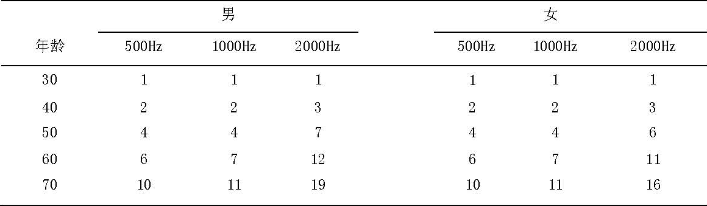
B.4 视觉器官损伤
B.4.1 盲及视力损害分级
表B.2 盲及视力损害分级标准（2003年，WHO）
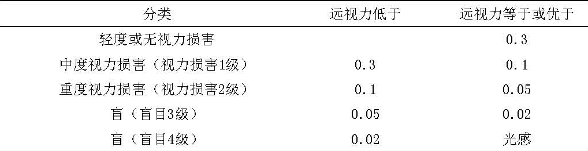
B.4.2 视野缺损
视野有效值计算公式：
实测视野有效值（%）=8条子午线实测视野值÷500
表B.3视野有效值与视野半径的换算
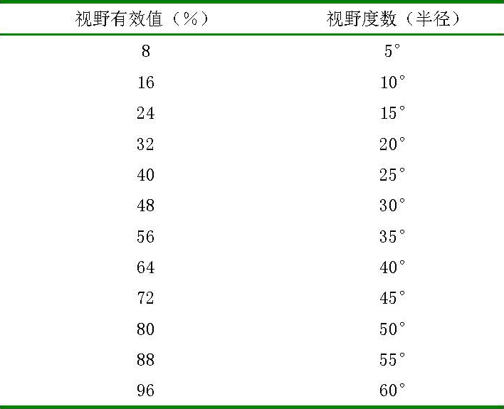
B.5 颈部损伤
B.5.1 甲状腺功能低下
重度：临床症状严重；Ｔ3、Ｔ4或者FT3、FT4低于正常值，TSH>50μU/L。
中度：临床症状较重；Ｔ3、Ｔ4或者FT3、FT4正常，TSH>50μU/L。
轻度：临床症状较轻；Ｔ3、Ｔ4或者FT3、FT4正常，TSH，轻度增高但<50μU/L。
B.5.2 甲状旁腺功能低下（以下分级需结合临床症状分析）
重度：空腹血钙<6mg/dL。
中度：空腹血钙6~7mg/dL。
轻度：空腹血钙7.1~8mg/dL。
B.5.3 发声功能障碍
重度：声哑、不能出声。
轻度：发音过弱、声嘶、低调、粗糙、带鼻音。
B.5.4 构音障碍
严重构音障碍：表现为发音不分明，语不成句，难以听懂，甚至完全不能说话。
轻度构音障碍：表现为发音不准，吐字不清，语调速度、节律等异常，鼻音过重。
B.6 胸部损伤
B.6.1 心功能分级
Ⅰ级：体力活动不受限，日常活动不引起过度的乏力、呼吸困难或者心悸。即心功能代偿期。
Ⅱ级：体力活动轻度受限，休息时无症状，日常活动即可引起乏力、心悸、呼吸困难或者心绞痛。亦称Ⅰ度或者轻度心衰。
Ⅲ级：体力活动明显受限，休息时无症状，轻于日常的活动即可引起上述症状。亦称Ⅱ度或者中度心衰。
Ⅳ级：不能从事任何体力活动，休息时亦有充血性心衰或心绞痛症状，任何体力活动后加重。亦称Ⅲ度或者重度心衰。
B.6.2 呼吸困难
1级：与同年龄健康者在平地一同步行无气短，但登山或者上楼时呈气短。
2级：平路步行1000m无气短，但不能与同龄健康者保持同样速度，平路快步行走呈现气短，登山或者上楼时气短明显。
3级：平路步行100m即有气短。
4级：稍活动（如穿衣、谈话）即气短。
B.6.3 窒息征象
临床表现为面、颈、上胸部皮肤出现针尖大小的出血点，以面部与眼眶部为明显；球睑结膜下出现出血斑点。
B.7 腹部损伤
B.7.1 肝功能损害
表B.4 肝功能损害分度
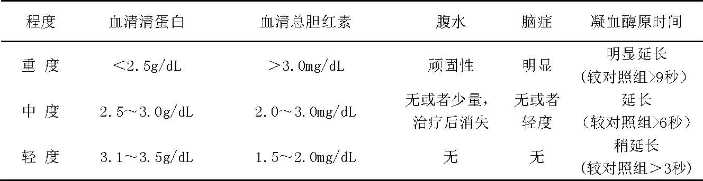
B.7.2 肾功能不全
表B.5 肾功能不全分期
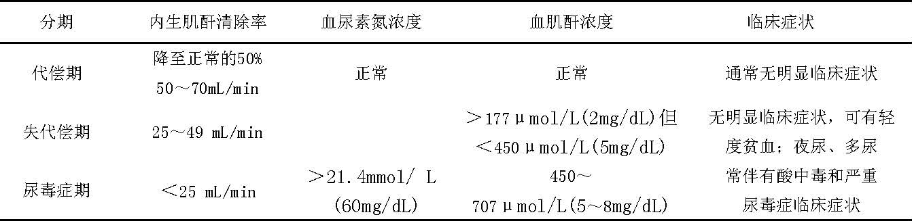
B.7.3 会阴及阴道撕裂
Ⅰ度：会阴部粘膜、阴唇系带、前庭粘膜、阴道粘膜等处有撕裂，但未累及肌层及筋膜。
Ⅱ度：撕裂伤累及盆底肌肉筋膜，但未累及肛门括约肌。
Ⅲ度：肛门括约肌全部或者部分撕裂，甚至直肠前壁亦被撕裂。
B.8 其他损伤
B.8.1 烧烫伤分度
表B.6 烧伤深度分度
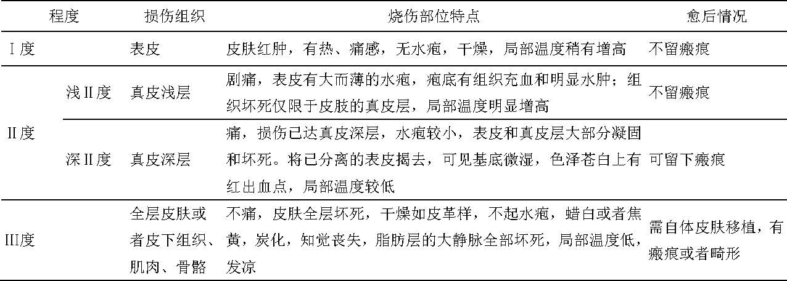
B.8.2 电击伤
Ⅰ度：全身症状轻微，只有轻度心悸。触电肢体麻木，全身无力，如极短时间内脱离电源，稍休息可恢复正常。
Ⅱ度：触电肢体麻木，面色苍白，心跳、呼吸增快，甚至昏厥、意识丧失，但瞳孔不散大。对光反射存在。
Ⅲ度：呼吸浅而弱、不规则，甚至呼吸骤停。心律不齐，有室颤或者心搏骤停。
B.8.3 溺水
重度：落水后3~4分钟，神志昏迷，呼吸不规则，上腹部膨胀，心音减弱或者心跳、呼吸停止。淹溺到死亡的时间一般为5~6分钟。
中度：落水后1~2分钟，神志模糊，呼吸不规则或者表浅，血压下降，心跳减慢，反射减弱。
轻度：刚落水片刻，神志清，血压升高，心率、呼吸增快。
B.8.4 挤压综合征
系人体肌肉丰富的四肢与躯干部位因长时间受压（例如暴力挤压）或者其他原因造成局部循环障碍，结果引起肌肉缺血性坏死，出现肢体明显肿胀、肌红蛋白尿及高血钾等为特征的急性肾功能衰竭。
Ⅰ级：肌红蛋白尿试验阳性，肌酸磷酸激酶（CPK）增高，而无肾衰等周身反应者。
Ⅱ级：肌红蛋白尿试验阳性，肌酸磷酸激酶（CPK）明显升高，血肌酐和尿素氮增高，少尿，有明显血浆渗入组织间隙，致有效血容量丢失，出现低血压者。
Ⅲ级：肌红蛋白尿试验阳性，肌酸磷酸激酶（CPK）显著升高，少尿或者尿闭，休克，代谢性酸中毒以及高血钾者。
B.8.5急性呼吸窘迫综合征
急性呼吸窘迫综合征（ARDS）须具备以下条件：
（1）有发病的高危因素。
（2）急性起病，呼吸频率数和/或呼吸窘迫。
（3）低氧血症，PaO2/FiO2≤200mmHg。
（4）胸部X线检查两肺浸润影。
（5）肺毛细血管楔压（PCWP）≤18mmHg，或者临床上除外心源性肺水肿。
凡符合以上5项可诊断为ARDS。
表B.7 急性呼吸窘迫综合征分度
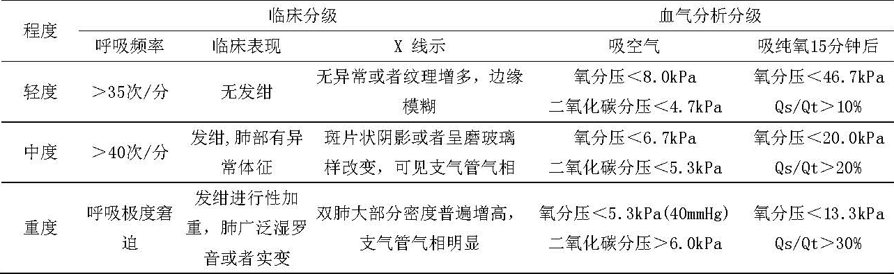
B.8.6 脂肪栓塞综合征
不完全型（或者称部分症候群型）：伤者骨折后出现胸部疼痛，咳呛震痛，胸闷气急，痰中带血，神疲身软，面色无华，皮肤出现瘀血点，上肢无力伸举，脉多细涩。实验室检查有明显低氧血症，预后一般良好。
完全型（或者称典型症候群型）：伤者创伤骨折后出现神志恍惚，严重呼吸困难，口唇紫绀，胸闷欲绝，脉细涩。本型初起表现为呼吸和心动过速、高热等非特异症状。此后出现呼吸窘迫、神志不清以至昏迷等神经系统症状，在眼结膜及肩、胸皮下可见散在瘀血点，实验室检查可见血色素降低，血小板减少，血沉增快以及出现低氧血症。肺部X线检查可见多变的进行性的肺部斑片状阴影改变和右心扩大。
B.8.7 休克分度
表B.8 休克分度
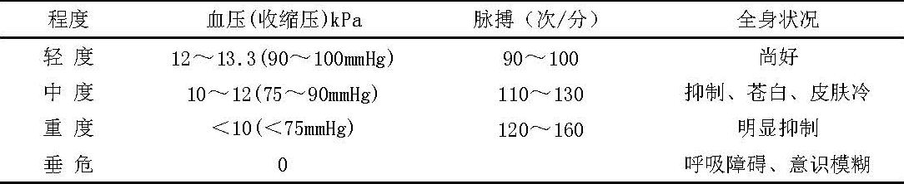
B.8.8 器质性阴茎勃起障碍
重度：阴茎无勃起反应，阴茎硬度及周径均无改变。
中度：阴茎勃起时最大硬度>0，<40%，每次勃起持续时间<10分钟。
轻度：阴茎勃起时最大硬度≥40%，<60%，每次勃起持续时间<10分钟。
附录C：（资料性附录）人体损伤程度鉴定常用技术
C.1 视力障碍检查
视力记录可采用小数记录或者5分记录两种方式。视力（指远距视力）经用镜片（包括接触镜，针孔镜等），纠正达到正常视力范围（0.8以上）或者接近正常视力范围（0.4-0.8）的都不属视力障碍范围。
中心视力好而视野缩小，以注视点为中心，视野半径小于10度而大于5度者为盲目3级，如半径小于5度者为盲目4级。
周边视野检查：视野缩小系指因损伤致眼球注视前方而不转动所能看到的空间范围缩窄，以致难以从事正常工作、学习或者其它活动。
对视野检查要求，视标颜色：白色，视标大小：5mm，检查距离330mm，视野背景亮度：31.5asb。
周边视野缩小，鉴定以实测得八条子午线视野值的总和计算平均值，即有效视野值。
视力障碍检查具体方法参考《视觉功能障碍法医鉴定指南》（SF/ZJD0103004）。
C.2 听力障碍检查
听力障碍检查应符合《听力障碍的法医学评定》（GA/T914）。
C.3 前庭平衡功能检查
本标准所指的前庭平衡功能丧失及前庭平衡功能减退，是指外力作用颅脑或者耳部，造成前庭系统的损伤。伤后出现前庭平衡功能障碍的临床表现，自发性前庭体征检查法和诱发性前庭功能检查法等有阳性发现（如眼震电图/眼震视图、静、动态平衡仪、前庭诱发电位等检查），结合听力检查和神经系统检查，以及影像学检查综合判定，确定前庭平衡功能是丧失，或者减退。
C.4 阴茎勃起功能检测
阴茎勃起功能检测应满足阴茎勃起障碍法医学鉴定的基本要求，具体方法参考《男子性功能障碍法医学鉴定规范》（SF/ZJD0103002）。
C.5 体表面积计算
九分估算法：成人体表面积视为100%，将总体表面积划分为11个9%等面积区域，即头（面）颈部占一个9%，双上肢占二个9%，躯干前后及会阴部占三个9%，臀部及双下肢占五个9%+1%（见表B2）。
表C.1 体表面积的九分估算法
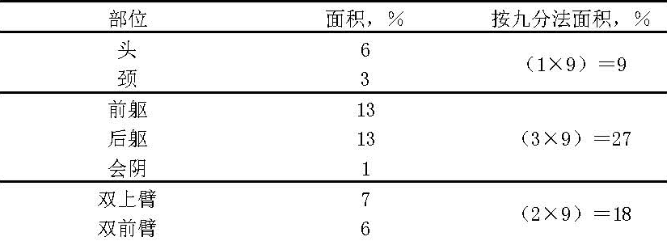
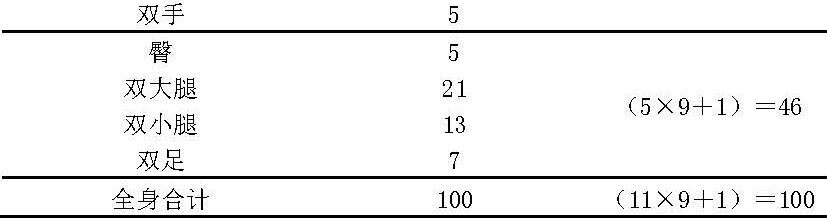
注：12岁以下儿童体表面积：头颈部=9+(12-年龄)，双下肢=46-(12-年龄)
手掌法：受检者五指并拢，一掌面相当其自身体表面积的1%。
公式计算法：S（平方米）=0.0061X身长（cm）+0.0128X体重（kg）-0.1529
C.6 肢体关节功能丧失程度评价
肢体关节功能评价使用说明（适用于四肢大关节功能评定）：
1.各关节功能丧失程度等于相应关节所有轴位（如腕关节有两个轴位）和所有方位（如腕关节有四个方位）功能丧失值的之和再除以相应关节活动的方位数之和。例如：腕关节掌屈40度，背屈30度，桡屈15度，尺屈20度。查表得相应功能丧失值分别为30%、40%、60%和60%，求得腕关节功能丧失程度为47.5%。如果掌屈伴肌力下降（肌力3级），查表得相应功能丧失值分别为65%、40%、60%和60%。求得腕关节功能丧失程度为56.25%。
2.当关节活动受限于某一方位时，其同一轴位的另一方位功能丧失值以100%计。如腕关节掌屈和背屈轴位上的活动限制在掌屈10度与40度之间，则背屈功能丧失值以100%计，而掌屈以40度计，查表得功能丧失值为30%，背屈功能以100%计，则腕关节功能丧失程度为65%。
3.对疑有关节病变（如退行性变）并影响关节功能时，伤侧关节功能丧失值应与对侧进行比较，即同时用查表法分别求出伤侧和对侧关节功能丧失值，并用伤侧关节功能丧失值减去对侧关节功能丧失值即为伤侧关节功能实际丧失值。
4.由于本标准对于关节功能的评定已经考虑到肌力减退对于关节功能的影响，故在测量关节运动活动度时，应以关节被动活动度为准。
C.6.1 肩关节功能丧失程度评定
表C.2 肩关节功能丧失程度（%）
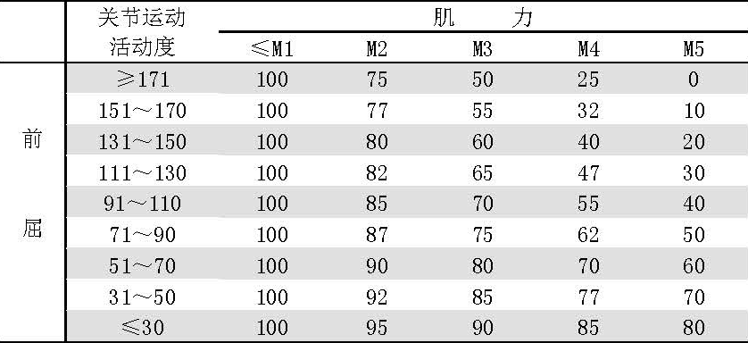
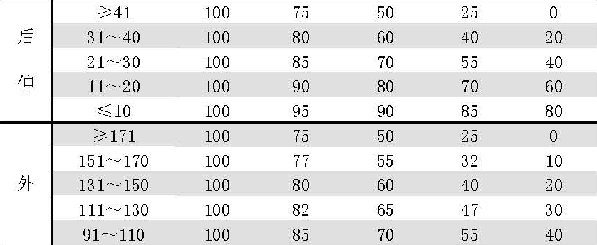
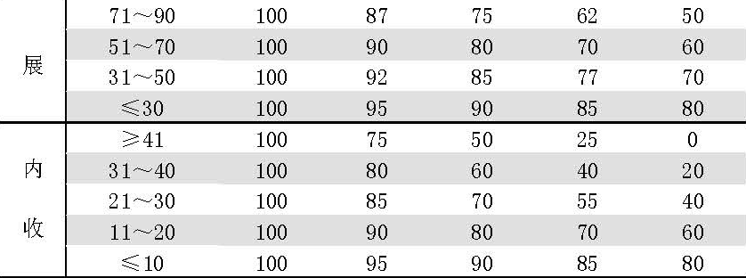
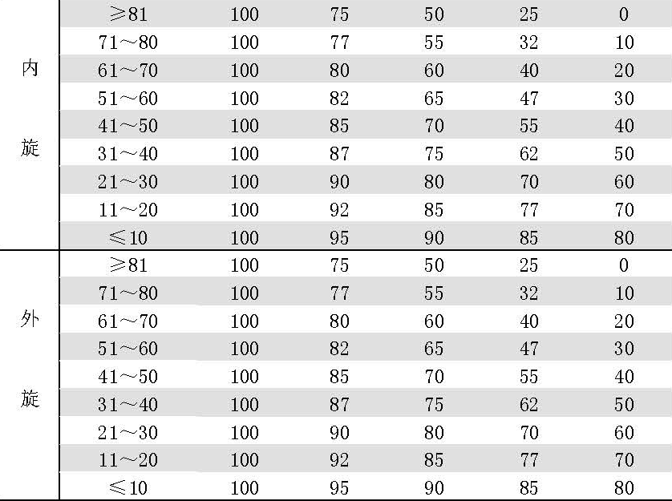
C.6.2 肘关节功能丧失程度评定
表C.3 肘关节功能丧失程度（%）
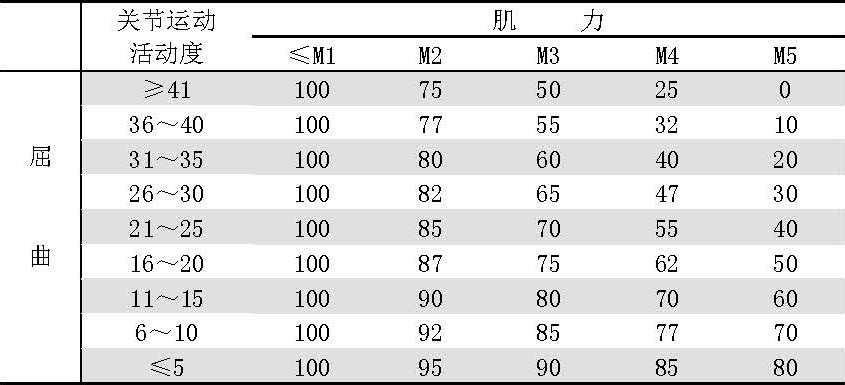
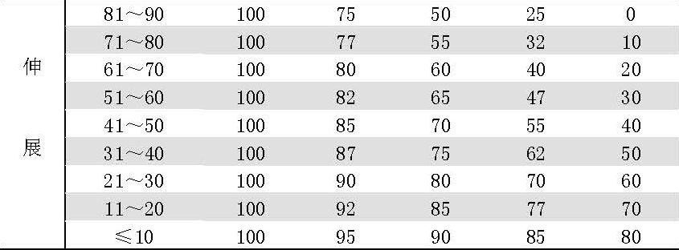
注：为方便肘关节功能计算，此处规定肘关节以屈曲90度为中立位0度。
C.6.3 腕关节功能丧失程度评定
表C.4 腕关节功能丧失程度（%）
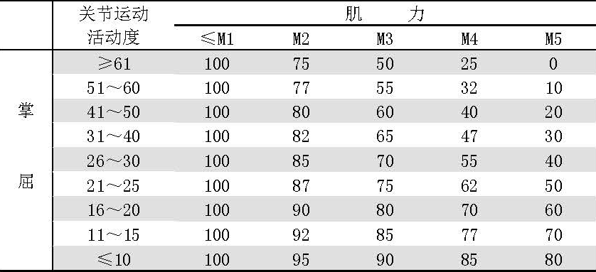
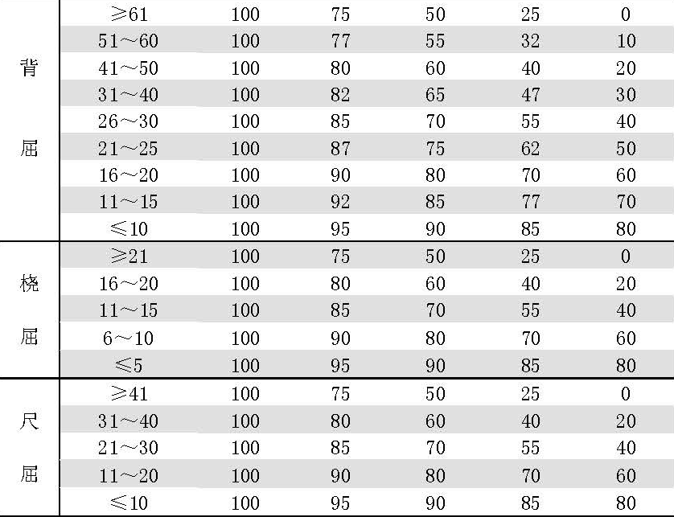
C.6.4 髋关节功能丧失程度评定
表C.5 髋关节功能丧失程度（%）
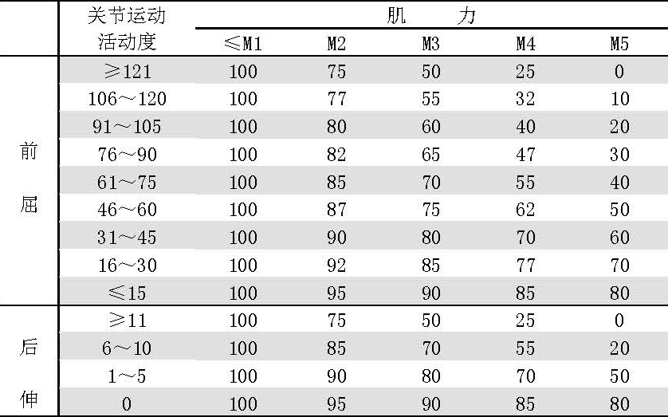
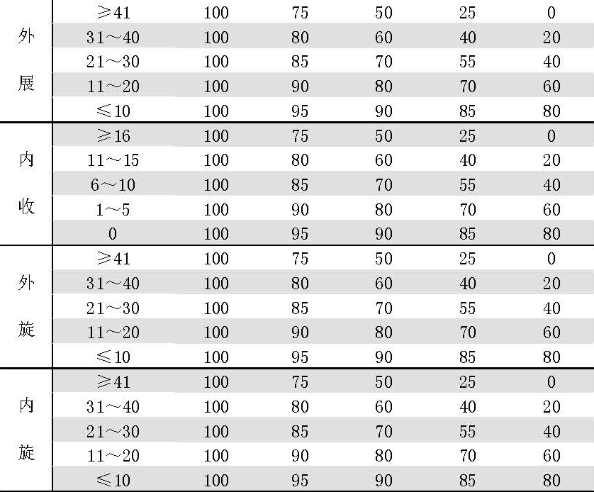
注：表中前屈指膝位。
C.6.5 膝关节功能丧失程度评定
表C.6 膝关节功能丧失程度（%）
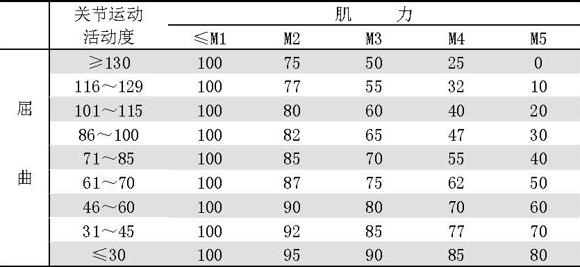
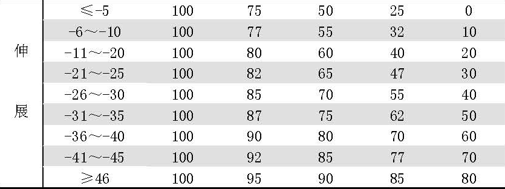
使用说明：考虑到膝关节同一轴位屈伸活动相互重叠，膝关节功能丧失程度的计算方法与其他关节略有不同，即根据关节屈曲与伸展运动活动度查表得出相应功能丧失程度，再求和即为膝关节功能丧失程度。当二者之和大于100%时，以100%计算。
C.6.6 踝关节功能丧失程度评定
表C.7 踝关节功能丧失程度（%）
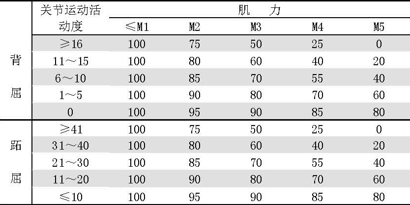
C.7 手功能计算
C.7.1手缺失和丧失功能的计算
一手拇指占一手功能的36%，其中末节和近节指节各占18%；食指、中指各占一手功能的18%，其中末节指节占8%，中节指节占7%，近节指节占3%；无名指和小指各占一手功能的9%，其中末节指节占4%，中节指节占3%，近节指节占2%。一手掌占一手功能的10%，其中第一掌骨占4%，第二、第三掌骨各占2%，第四、第五掌骨各占1%。本标准中，双手缺失或丧失功能的程度是按前面方法累加计算的结果。
C.7.2手感觉丧失功能的计算
手感觉丧失功能是指因事故损伤所致手的掌侧感觉功能的丧失。手感觉丧失功能的计算按相应手功能丧失程度的50%计算。